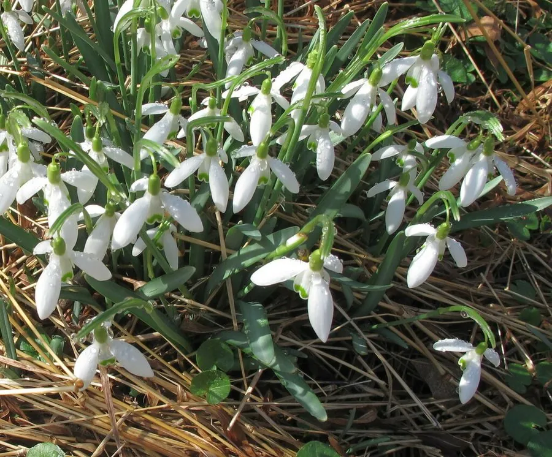

花卉与草本 · 植物界
雪滴花 Galanthus nivalis

石蒜科多年生球根花卉，早春开白色下垂小花，花瓣顶端具绿色斑点，耐寒性强，是欧洲早春的代表花卉。
- 分类
- 门被子植物门纲木兰纲目天门冬目科石蒜科属雪滴花属
- 栖息环境
- 欧洲林下、草甸与岩石坡地，喜凉爽半阴
- 地理分布
- 原产欧洲中部至南部；中国北方园林引种栽培
- 保护级别
- 暂无评估；部分欧洲国家关注其野生种群
物种志
雪滴花为石蒜科雪滴花属多年生球根草本，株高 10–20 厘米，地下具球形鳞茎。叶片线形，基生，粉绿色。花葶直立，花单生，下垂，花被片 6 枚，白色，外轮 3 枚较长，内轮 3 枚较短、顶端具绿色斑点，花期 2–4 月；果实为蒴果。
雪滴花原产欧洲中部至南部，中国北方园林引种栽培，喜凉爽湿润、半阴的环境，耐寒性极强，常在雪中开花，适宜疏松肥沃、排水良好的土壤。它花形小巧、花色洁白，是欧洲早春的代表花卉，常成片种植于林下、草坪边缘与岩石园；鳞茎含生物碱，有毒，不可食用。栽培以分球繁殖为主，花后需保留叶片养球，夏季休眠期保持干燥。
形态与习性
- 株高10–20 厘米，花葶直立
- 花期2–4 月，花白色下垂
- 果期花后结蒴果
- 光照喜半阴，也耐林下散射光
- 水分喜湿润，休眠期保持干燥
- 土壤疏松肥沃、排水良好的土壤
- 主要用途早春林下、草坪边缘与岩石园
趣味知识
- 雪滴花常在雪中开花，是欧洲最早报春的花卉之一。
- 它的内轮花瓣顶端有绿色斑点，是辨认的重要特征。
- 雪滴花虽小，却含有生物碱，全株有毒，不可食用。
- 英国有专门的雪滴花观赏园，早春吸引大量游客。